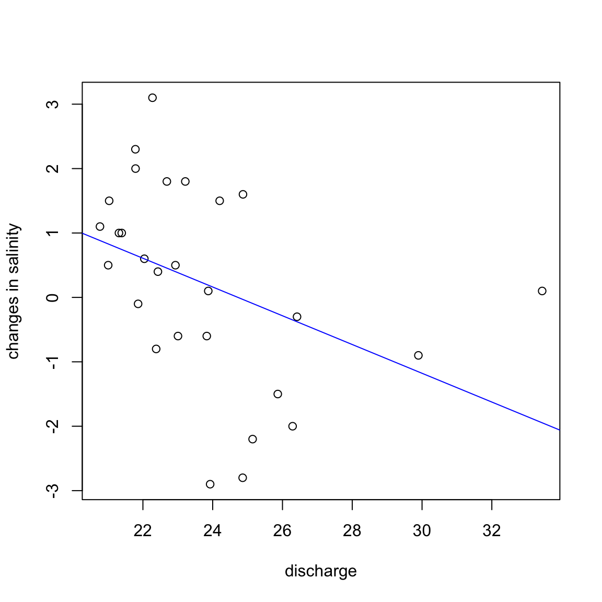

1.8 Sum of squares and regression analysis
Consider the simple regression model \(Y = \beta_0 + \beta_1 X + \epsilon\). If we assume that \(\beta_1 = 0\) then the best estimate \(\hat{\beta}_0\) for fitting a constant \(\beta_0\) to the \(\{Y_i\}\) under least square is \(\hat{\beta}_0 = \bar{Y}\) and the squared error of using \(\bar{Y}\) as an estimate for the \(\{Y_i\}\) is \[\begin{equation*} \mathrm{SSTO} = \sum{(Y_i - \bar{Y})^2}. \end{equation*}\] If \(\beta_1 \not = 0\) and we fit the “full” model, then the squared error of using \(\hat{\beta}_0 + \hat{\beta}_1 X\) as an estimate for the \(\{Y_i\}\) is \[\begin{equation*} \mathrm{SSE} = \sum{(Y_i - \hat{Y}_i)^2} = \sum{(Y_i - \hat{\beta}_0 - \hat{\beta}_1 X_i)^2} \end{equation*}\]\(\mathrm{SSTO}\) is termed the total sum of squares while \(\mathrm{SSE}\) is termed the error sum of squares. Their difference is termed the regression sum of squares and is denoted \(\mathrm{SSR}\).
We note that \[\begin{equation*} \begin{split} \mathrm{SSTO} &= \sum{(Y_i - \bar{Y})^2} = \sum{(Y_i - \hat{Y}_i + \hat{Y}_i - \bar{Y}_i)^2} \\ &= \sum{(Y_i - \hat{Y}_i)^2} + {\color{blue}{2 \sum{(Y_i - \bar{Y})(Y_i - \hat{Y}_i)}}} +\sum{(\hat{Y}_i - \bar{Y})^2} \\ &= \sum{(Y_i - \hat{Y}_i)^2} + {\color{blue}{0}} + \sum{(\hat{Y}_i - \bar{Y})^2} \\ &= \mathrm{SSE} + \sum{(\hat{Y}_i - \bar{Y})^2} = \mathrm{SSE} + \mathrm{SSR} \end{split} \end{equation*}\]As \(\mathrm{SSE}\) measure the squared error when fitting the model \(Y = \beta_0 + \beta_1 X + \epsilon\) while \(\mathrm{SSTO}\) measure the squared error when fitting the model \(Y = \beta_0 + \epsilon\), the ratio \(\tfrac{\mathrm{SSTO}}{\mathrm{SSE}}\) is a reasonable test statistic for the hypothesis \(\mathbb{H}_0 \colon \beta_1 = 0\) versus \(\mathbb{H}_{A} \colon \beta_1 \not = 0\). Note that \(\tfrac{\mathrm{SSTO}}{\mathrm{SSE}} = 1 + \tfrac{\mathrm{SSR}}{\mathrm{SSE}}\).
We summarize the above observation in the following proposition.Under the null hypothesis, the above test statistic follows \(F(1, n-2)\), a \(F\) distribution with degrees of freedom \(1\) and \(n-2\).
1.8.1 \(F\)-test and \(t\)-test
Let \(T\) be the test statistic for testing the hypothesis \(\mathbb{H}_0 \colon \beta_1 = 0\) versus \(\mathbb{H}_{A} \colon \beta_1 \not = 0\) using the Student \(t\)-distribution. Then \(T = \tfrac{\hat{\beta}_1}{s\{\hat{\beta}_1\}}.\)
Meanwhile, \[\begin{equation*} F^{*} = \frac{\mathrm{MSR}}{\mathrm{MSE}} = \frac{\hat{\beta}_1^{2} t_{xx}}{ \mathrm{MSE}} = \frac{\hat{\beta}_1^{2}}{s^{2}\{\hat{\beta}_1\}} = T^2 \end{equation*}\]as \(s^2\{\hat{\beta}_1\} = \mathrm{MSE}/t_{xx}\).
Thus testing \(\mathbb{H}_0 \colon \beta_1 = 0\) against \(\mathbb{H}_{A} \colon \beta_1 \not = 0\) using either the test statistics \(F^{*}\) and \(T\) give identical results.
In general, if \(T\) is Student \(t\) with \(n\) degrees of freedom, then \(T^2\) is \(F(1, n)\). The \(F\) test will prove to be very useful when we want to test multiple coefficients in the multivariate linear regression model. On the other hand, one can test \(\mathbb{H}_0 \colon \beta_1 \leq 0\) versus \(\mathbb{H}_{A} \colon \beta_1 \geq 0\) using \(T\) but not using \(F^{*}\).
Table 1.4: The salinity dataset records the salinity level in the Pamlico Sound (North Carolina) from 1972 to 1977. There are 28 measurements in total. A snippet of the data is provided here.
| salinity | lagged.salinity | trend | discharge |
|---|---|---|---|
| 7.6 | 8.2 | 4 | 23 |
| 7.7 | 7.6 | 5 | 24 |
| 4.3 | 4.6 | 0 | 26 |
| 5.9 | 4.3 | 1 | 25 |
| 5.0 | 5.9 | 2 | 30 |
| 6.5 | 5.0 | 3 | 24 |
library("SemiPar")
data(salinity)
salinity$delta.salinity <- salinity$salinity - salinity$lagged.sal
Y <- salinity$delta.salinity
X <- salinity$discharge
txx <- sum((X - mean(X))^2)
txy <- sum((X - mean(X)) * (Y - mean(Y)))
beta1.hat <- txy/txx
beta0.hat <- mean(Y) - beta1.hat * mean(X)
plot(X, Y, xlab = "discharge", ylab = "changes in salinity")
abline(beta0.hat, beta1.hat, col = "blue")
Y.fitted <- beta0.hat + beta1.hat * X
n <- length(Y)
SSE <- sum((Y - Y.fitted)^2)
SSTO <- sum((Y - mean(Y))^2)
MSE <- SSE/(n - 2)
Fstar <- (SSTO - SSE)/SSE * (n - 2)/1 ## Fstar = (SSTO - SSE)/MSE
s2.beta1.hat <- MSE/txx
T <- beta1.hat/sqrt(s2.beta1.hat)| T | T^2 | F | 95% qf | 97.5% qt |
|---|---|---|---|---|
| -2.25 | 5.07 | 5.07 | 4.22 | 4.22 |
1.8.2 General linear test approach
The preceding approach to test the hypothesis \(\mathbb{H}_{0} \colon \beta_1 = 0\) against the hypothesis \(\mathbb{H}_{A} \colon \beta_1 \not = 0\) for the simple linear regression model can be extended to testing more general hypothesis. For example, suppose we posit the model \[\begin{equation*} Y_i = \beta_0 + \beta_1 X^{(1)}_{i} + \beta_2 X^{(2)}_i + \cdots + \beta_{k} X^{(k)}_i + \epsilon_i \end{equation*}\] Let \(\hat{\beta}_0, \hat{\beta}_1, \dots, \hat{\beta}_k\) be estimates of \(\beta_0, \beta_1, \dots, \beta_k\) and consider the sum of squared error \[\begin{equation*} \mathrm{SSEF} = \sum{(Y_i - \hat{Y}_i)^2} = \sum{(Y_i - \hat{\beta}_0 - \hat{\beta}_1 X^{(1)}_{i} - \cdots - \hat{\beta}_k X^{(k)}_{i})^2}. \end{equation*}\] Let us suppose that we are interested in whether, for some given \(S \subset \{1,2,\dots,k\}\), that \(\beta_k = 0\) for \(k \in S\). We consider the sum of squared error \[\begin{equation*} \mathrm{SSER} = \sum{(Y_{i} - \tilde{Y}_{i})^2} = \sum{(Y_{i} - \tilde{\beta}_0 - \sum_{k \in S}{\tilde{\beta}_{k} X^{(k)}_{i}})^2}. \end{equation*}\]where the \(\tilde{\beta}_0\) and \(\tilde{\beta}_k\) for \(k \in S\) are obtained by refitting the data with respect to the reduced variables.
\(\mathrm{SSEF}\) measures the error for the “full” model while \(\mathrm{SSER}\) measures the error for the “reduced” model.
The “full” model is to be preferred over the “reduced” model, that is, there exists \(\beta_{k} \not = 0\) for some \(k \in S\), if \(\mathrm{SSEF}\) is sufficiently smaller than \(\mathrm{SSER}\). One way to do this is to use the statistic \(\mathrm{SSER} - \mathrm{SSEF}\) and chose the “full” model for large value of the statistic. However, as the “full” model is more complex, e.g., \(df_{F} < df_{R}\), we might also want to penalize this complexity. That is, we will prefer the “full” model only if \(\mathrm{SSEF}\) is smaller than \(\mathrm{SSER}\), even after taking into account the extra complexity \(df_{R} - df_{F}\). This suggest the statistic \[\begin{equation*} F^{*} = \frac{\mathrm{SSER} - \mathrm{SSEF}}{\mathrm{SSEF}} \frac{df_{F}}{df_{R} - df_{F}} \end{equation*}\]The distribution of \(F^{*}\) follows a \(F\)-distribution. We will discuss the statistic \(F^{*}\) and its properties in more detail when we discuss inference for the general linear regression model. We now present an example illustrating the use of the \(F^{*}\) statistic to compare two models for modeling the changes in salinity in the Pamlico Sound. More specifically,we want to compare the model \[ \textrm{delta.salinity} = \beta_0 + \beta_1 \textrm{discharge} + \epsilon \] with a linear term in the predictor variable discharge against the model \[ \textrm{delta.salinity} = \beta_0 + \beta_1 \textrm{discharge} + \beta_2 \textrm{discharge}^2 + \epsilon.\] with a quadratic term in the variable discharge. The following output indicates that the two models are possibly “different” at significance level \(\alpha = 0.05\) but are “comparable” at significance level \(\alpha = 0.01\).
modelR <- lm(delta.salinity ~ discharge, salinity)
modelF <- lm(delta.salinity ~ discharge + I(discharge^2), salinity)
Y.fittedR <- fitted.values(modelR)
Y.fittedF <- fitted.values(modelF)
SSE.modelR <- sum((Y - Y.fittedR)^2)
SSE.modelF <- sum((Y - Y.fittedF)^2)| SSE (Reduced Model) | SSE (Full Model) | F value | Pr(>F) |
|---|---|---|---|
| 54.3 | 43.5 | 6.23 | 0.02 |
1.8.3 Descriptive measures of linear association
Let \(R^2\) be the statistic \(R^{2} = 1 - \frac{\mathrm{SSE}}{\mathrm{SSTO}}\). \(R^2\) measure the reduction \(\mathrm{SSTO} - \mathrm{SSR}\) obtained by considering the linear term (\(\beta_1\)) in the regression compared with the total variation \(\mathrm{SSTO}\). When \(\hat{\beta}_1 \not = 0\) and all observations fall on the fitted regression line, then \(R^{2} = 1\). When \(Y_i = \bar{Y}\) for all \(i\), then \(R^{2} = 0\) (indicating a lack of a non-trivial linear relationship). For \(0 < R^{2} < 1\), large values suggests higher degree of linear association.
There are several possible mis-understanding regarding \(R^{2}\). The main one is that \(R^{2}\) only compares the fit between a horizontal line and a posited regression line. Thus large value of \(R^{2}\) only indicates that the posited regression line fits better then the horizontal line and not that the posited regression line is a good fit for the data.
Figure 1.8: https://xkcd.com/1725/